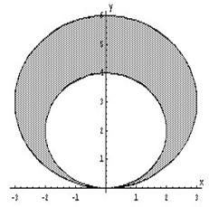

П 25 №11
Вычислите площадь фигуры, ограниченной линиями, заданными
уравнениями в полярных координатах
,  .
.
.РЕШЕНИЕ:
Линии в полярных координатах и представляют собой окружности,
смещенные вверх по оси  , с радиусами 3 и 2
соответственно.
, с радиусами 3 и 2
соответственно.
представляют собой окружности,
смещенные вверх по оси , с радиусами 3 и 2
соответственно. - площадь фигуры,
ограниченной линией .
Площадь фигуры, заключенной между окружностями:

Ответ: